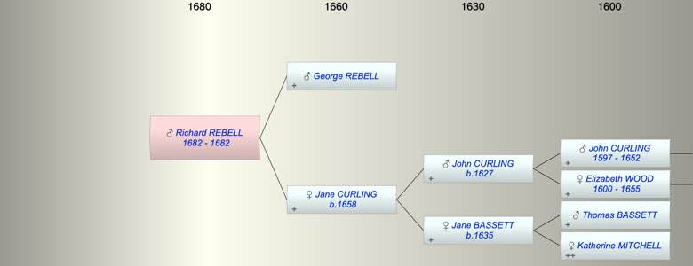

| [Index] |
| Richard REBELL (1682 - 1682) |
|  |
| b. 1682 at St Laurence |
| d. 1682 at St Laurence aged 0 |
| Parents: |
| George REBELL |
| Jane CURLING (1658 - ) |
| Events in Richard REBELL (1682 - 1682)'s life | |||||
| Date | Age | Event | Place | Notes | Src |
| 1682 | Richard REBELL was born | St Laurence | Note 1 | ||
| 1682 | Richard REBELL died | St Laurence | Note 2 | ||
| Note 1: bap St Laurence 27 Aug 1682 ex FMP PR |
| Note 2: buried 10 Sep 1682 St Laurence as K(R) oboll ex FMP PR |
| Created on a Mac™ using iFamily for Mac™ on 8 Oct 2023 |